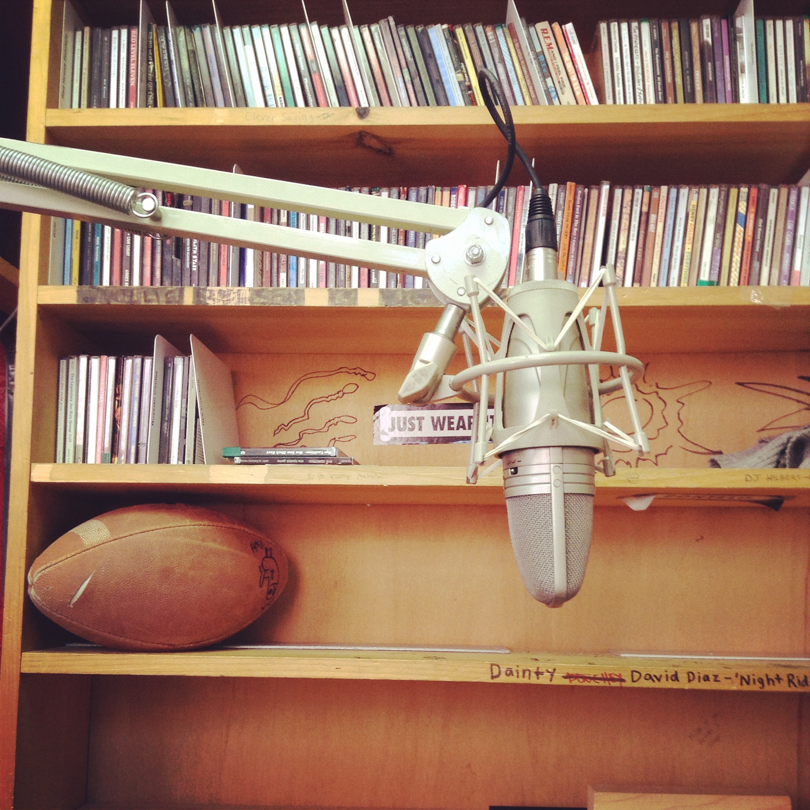

Devon V. Johnson
I'm just a college student interested in folklore and art. (I also really like plants.) I'm currently finishing my BA in English at Virginia Tech.

Current Projects
I do a lot of weird art / craft / writing projects. Currently, I'm focused on my undergraduate thesis project (which deals with quilt documentation efforts in Virginia's New River Valley).